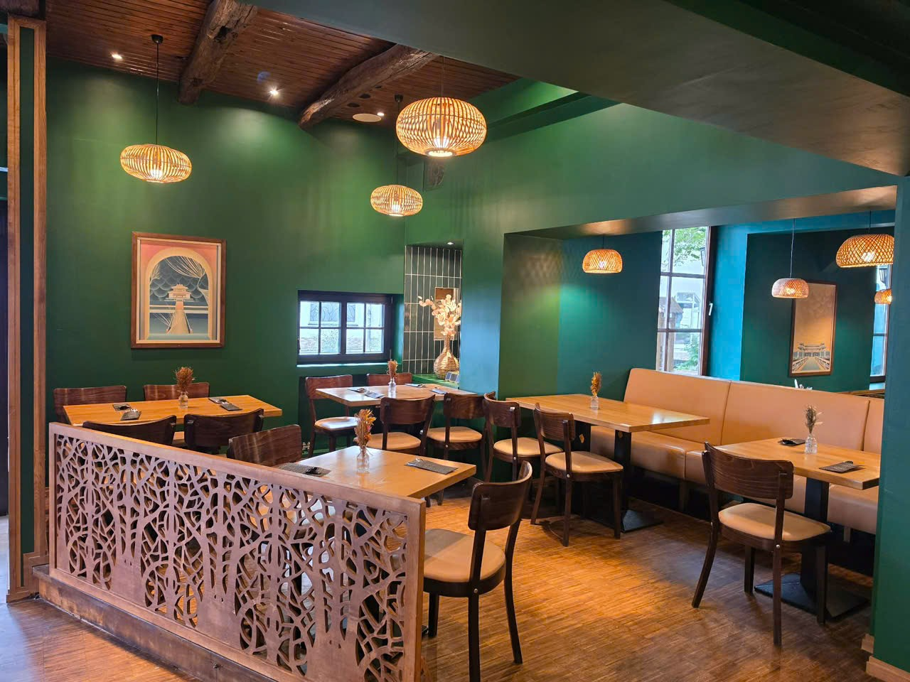
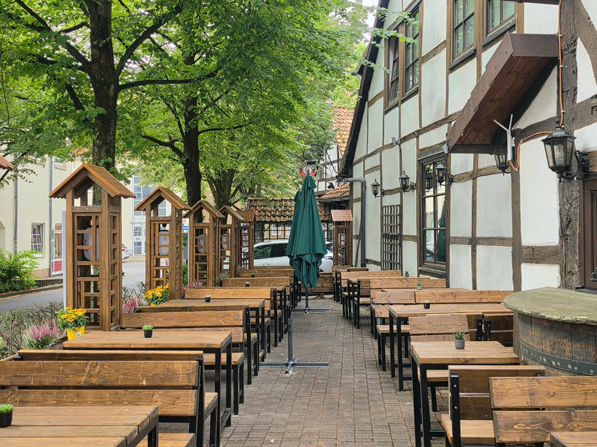
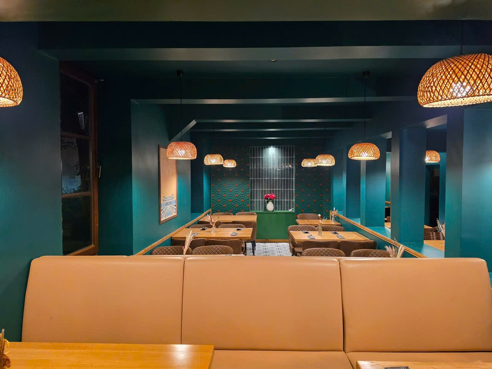
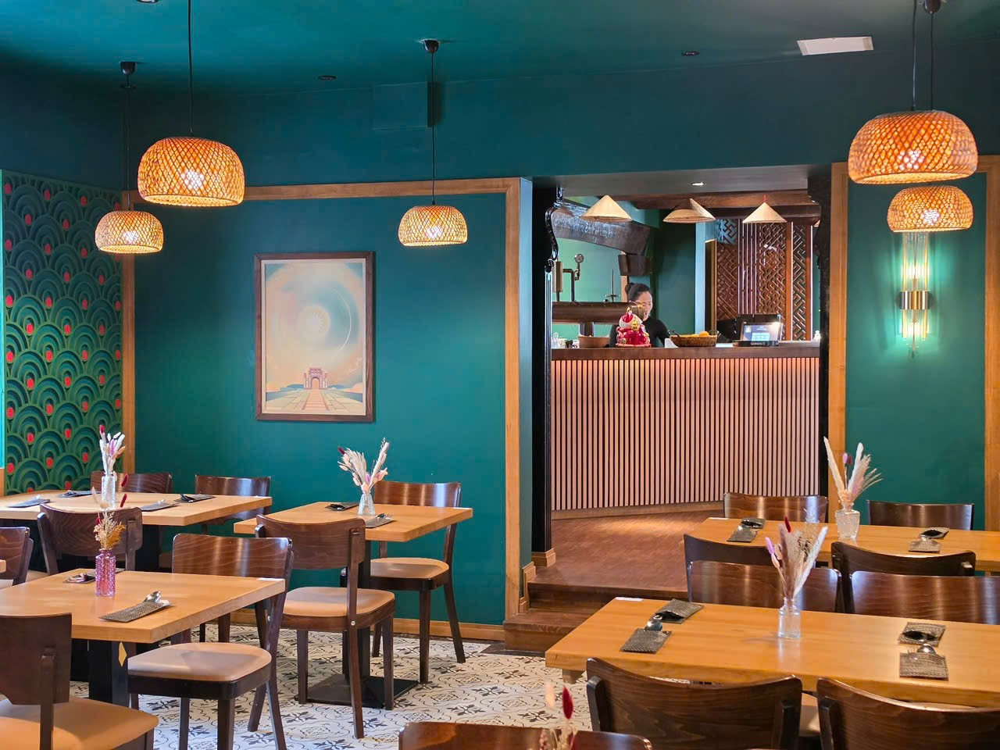
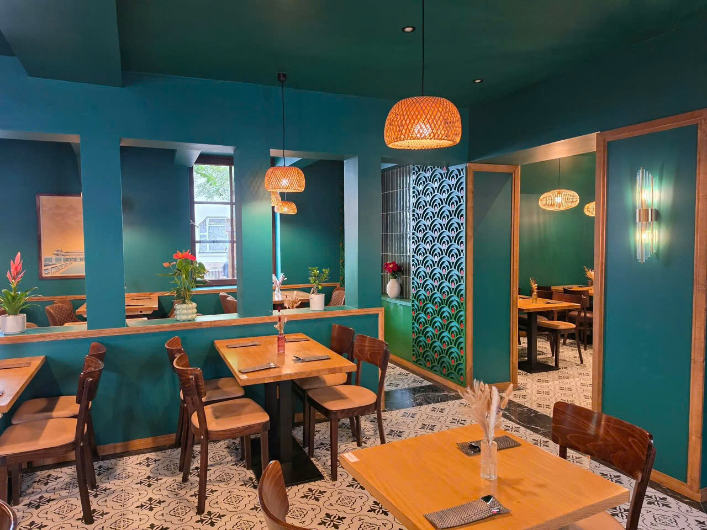
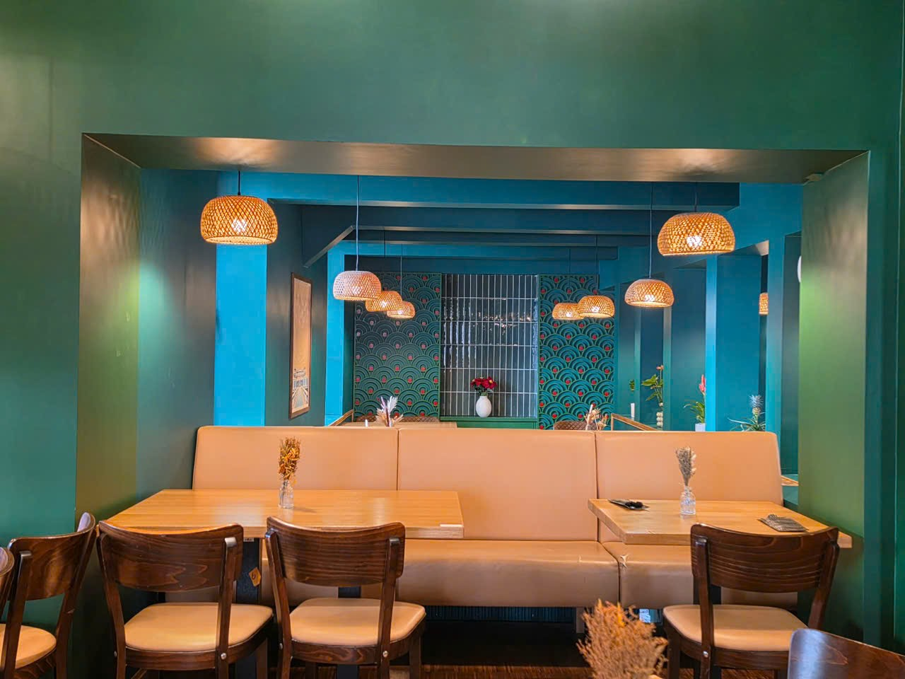
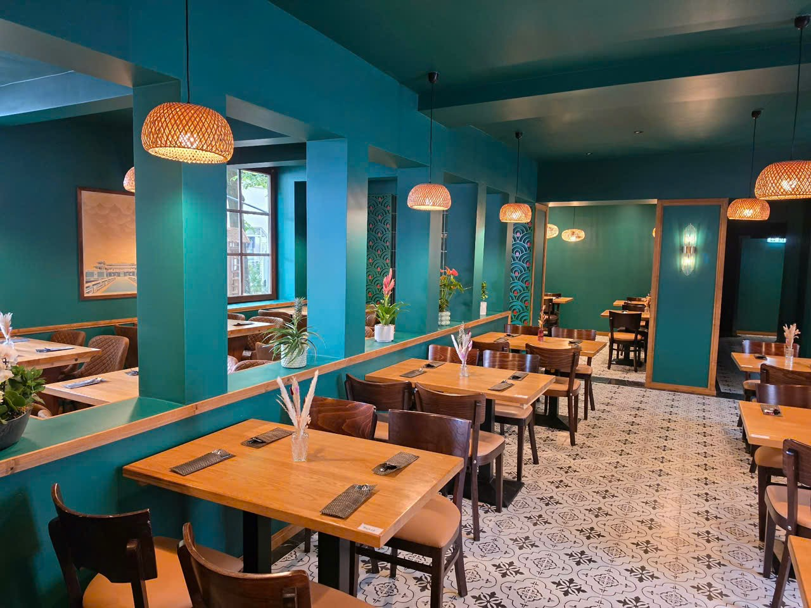

Ein Haus aus dem Jahr 1769 – und darin die Küche Vietnams.
Wir haben das historische Gebäude am Kastanienwall liebevoll saniert und im vietnamesischen Stil neu gestaltet: grüne Wände, warmes Holz, geflochtene Lampen und handgefertigte Fliesen treffen auf alte Balken und Fenster. Ein Ort, an dem Geschichte und Fernost zusammenkommen.
Hausgemacht. Ehrlich. Vietnamesisch.
Auf dem Teller gibt es ehrliche, hausgemachte vietnamesische Küche. Das Herzstück ist unsere Pho: Die Brühe wird täglich aus Rinderknochen und Gewürzen über viele Stunden gekocht. Dazu Sommerrollen, Bún-Bowls, gebratene Reisgerichte, Currys und frisch in unserer Küche zubereitetes Sushi.

Platz für besondere Momente
Über 100 Sitzplätze innen, 50 Plätze im Garten unter alten Bäumen und ein separater Raum für bis zu 25 Gäste – ideal für Geburtstage, Familienfeiern und Firmenessen.
Reservierung unter +49 5151 3609. Alle Gerichte auch zum Mitnehmen. Wir freuen uns auf Ihren Besuch!

Eindrücke aus dem JURY
Unser Restaurant am Kastanienwall in Hameln.




